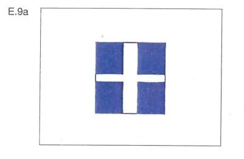
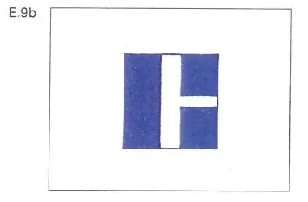
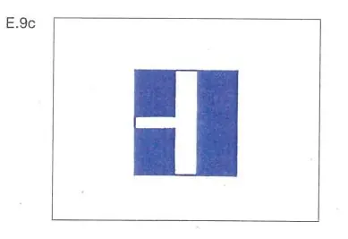
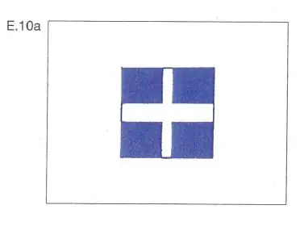
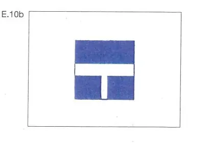
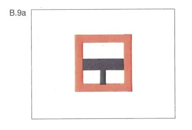
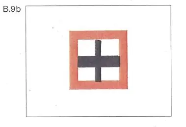
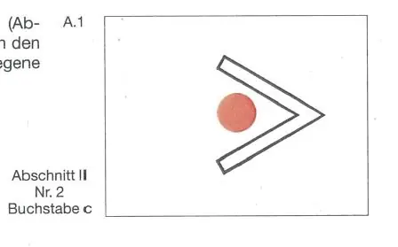

§ 6.16 Einfahrt in und Ausfahrt aus Häfen und Nebenwasserstraßen
Rheinschiffahrtspolizeiverordnung
1. | Fahrzeuge dürfen aus einem Hafen oder einer Nebenwasserstraße nur ausfahren und in die Hauptwasserstraße einbiegen oder die Hauptwasserstraße überqueren oder in einen Hafen oder eine Nebenwasserstraße nur einfahren, nachdem sie sich vergewissert haben, daß diese Manöver ausgeführt werden können, ohne daß eine Gefahr entsteht und ohne daß andere Fahrzeuge unvermittelt ihren Kurs oder ihre Geschwindigkeit ändern müssen. Ein Talfahrer, der zur Einfahrt in einen Hafen oder in eine Nebenwasserstraße aufdrehen muß, hat einem Bergfahrer, der ebenfalls einfahren will, die Vorfahrt zu lassen. |  |
Wasserstraßen, die als Nebenwasserstraßen zu betrachten sind, können durch ein Tafelzeichen E.9 oder E.10 (Anlage 7) gekennzeichnet sein. | ||
 |  | |
 |  | |
2. | Fahrzeuge - ausgenommen Fähren -, die ein Manöver im Sinne der Nummer 1 beabsichtigen, das andere Fahrzeuge dazu zwingt oder zwingen kann, ihren Kurs oder ihre Geschwindigkeit zu ändern, müssen ihre Absicht rechtzeitig wie folgt ankündigen: | |
a) | durch "drei lange Töne, einen kurzen Ton", wenn sie vor der Einfahrt oder nach der Ausfahrt ihren Kurs nach Steuerbord richten wollen; | |
b) | durch "drei lange Töne, zwei kurze Töne", wenn sie vor der Einfahrt oder nach der Ausfahrt ihren Kurs nach Backbord richten wollen; | |
c) | durch "drei lange Töne", wenn sie nach der Ausfahrt die Wasserstraße überqueren wollen; vor Beendigung der Querfahrt müssen sie erforderlichenfalls geben: | |
"einen langen Ton, einen kurzen Ton", wenn sie ihren Kurs nach Steuerbord richten wollen, | ||
"einen langen Ton, zwei kurze Töne", wenn sie ihren Kurs nach Backbord richten wollen. | ||
Die anderen Fahrzeuge müssen daraufhin, soweit notwendig, ihren Kurs und ihre Geschwindigkeit ändern. | ||
3. | Ist an der Ausfahrt eines Hafens oder an der Mündung einer Nebenwasserstraße ein Tafelzeichen B.9a oder B.9b (Anlage 7) angebracht, dürfen die aus dem Hafen oder aus der Nebenwasserstraße kommenden Fahrzeuge in die Hauptwasserstraße nur einbiegen oder sie überqueren, wenn dadurch die Fahrzeuge auf der Hauptwasserstraße nicht gezwungen werden, Kurs oder Geschwindigkeit zu ändern. | |
 |  | |
4. | Ein rotes Licht (Zeichen A.1, Anlage 7) mit einem weißen Pfeil (Abschnitt II Nr. 2 Buchstabe c, Anlage 7) zeigt an, daß die Einfahrt in den in Pfeilrichtung gelegenen Hafen oder in die in Pfeilrichtung gelegene Nebenwasserstraße verboten ist. |  |